zone-first v2 - lots with setbacks: the six pairwise-different plans per brief
Ranking is the provisional quality score, lower is better: each scored metric is measured against the band across the user's own plans; pieces per 100 m² is shown at score weight 0. A candidate is different from another when their layout families differ or their same-kind area overlap is below 0.7. The user's layouts never steer generation or ranking. Every zone carries its name and size (metres, 1 dp); Flex is hatched with its class, an extension is hatched the other way and labelled "Zone · extension", flex-walls are hatched with a dashed edge, the spine is dotted - nothing relies on colour.
SB-01 - 15.0 x 28.0 lot, 4 bed (user example) 13000 x 23000 mm, 4 bed, double garage
lot 15000 x 28000 mm - setbacks (mm) front 2000 / garage 4000 / left 1000 / right 1000 / rear 3000 - garage recess 2000 mm
valid 2832/5824 generated · 2202 distinct · 1101 mirror images hidden
option 1 (rank 1 of 2202)score 8.75 · Flex share 14% · living 15% (43.1 m²) · circulation 5% · Core 20% · pieces 5.9/100 m² · bedroom spread 0.0 m · wet near bed yes · laundry near yes · spine 8.0 m · extensions 0.0 m² · flex m²: room 0.0 · living 43.1 · circulation 4.3 · storage 35.9 · sliver 0.0 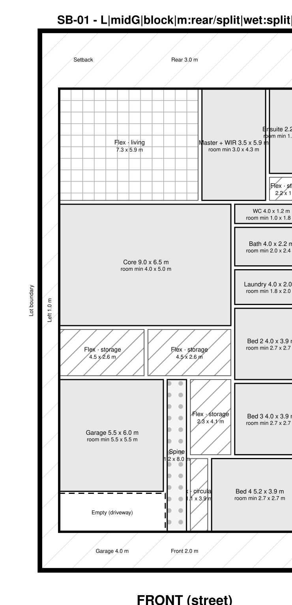
option 2 (rank 21 of 2202)score 9.23 · Flex share 12% · living 3% (8.8 m²) · circulation 12% · Core 17% · pieces 6.6/100 m² · bedroom spread 11.3 m · wet near bed yes · laundry near yes · spine 8.0 m · extensions 0.0 m² · flex m²: room 0.0 · living 8.8 · circulation 13.4 · storage 19.8 · sliver 0.0 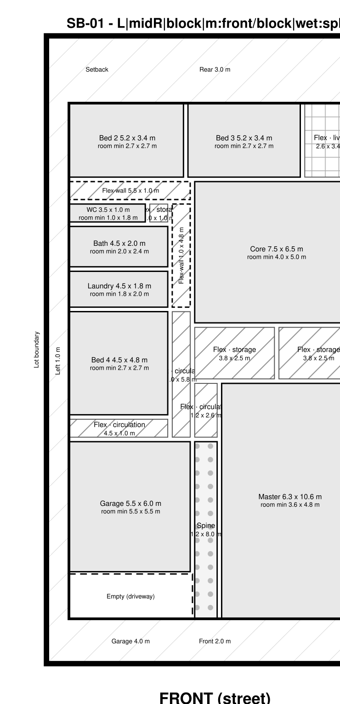
option 3 (rank 35 of 2202)score 12.38 · Flex share 26% · living 0% (0.0 m²) · circulation 5% · Core 25% · pieces 5.6/100 m² · bedroom spread 0.0 m · wet near bed yes · laundry near yes · spine 8.0 m · extensions 22.0 m² · flex m²: room 61.0 · living 0.0 · circulation 5.2 · storage 7.4 · sliver 0.0 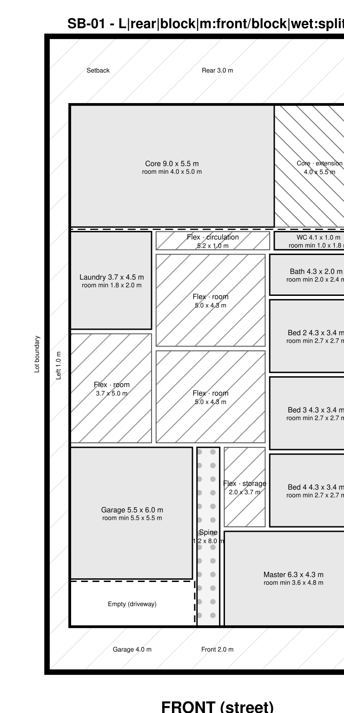
option 4 (rank 63 of 2202)score 17.61 · Flex share 30% · living 2% (7.0 m²) · circulation 8% · Core 20% · pieces 7.3/100 m² · bedroom spread 9.3 m · wet near bed yes · laundry near yes · spine 8.0 m · extensions 0.0 m² · flex m²: room 84.5 · living 7.0 · circulation 2.7 · storage 0.0 · sliver 0.0 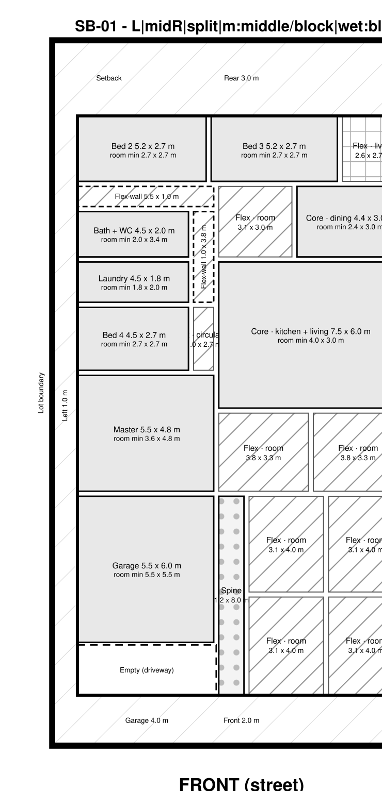
option 5 (rank 69 of 2202)score 18.39 · Flex share 29% · living 0% (0.0 m²) · circulation 14% · Core 20% · pieces 9.0/100 m² · bedroom spread 11.8 m · wet near bed yes · laundry near yes · spine 8.0 m · extensions 0.0 m² · flex m²: room 59.7 · living 0.0 · circulation 21.3 · storage 3.7 · sliver 0.0 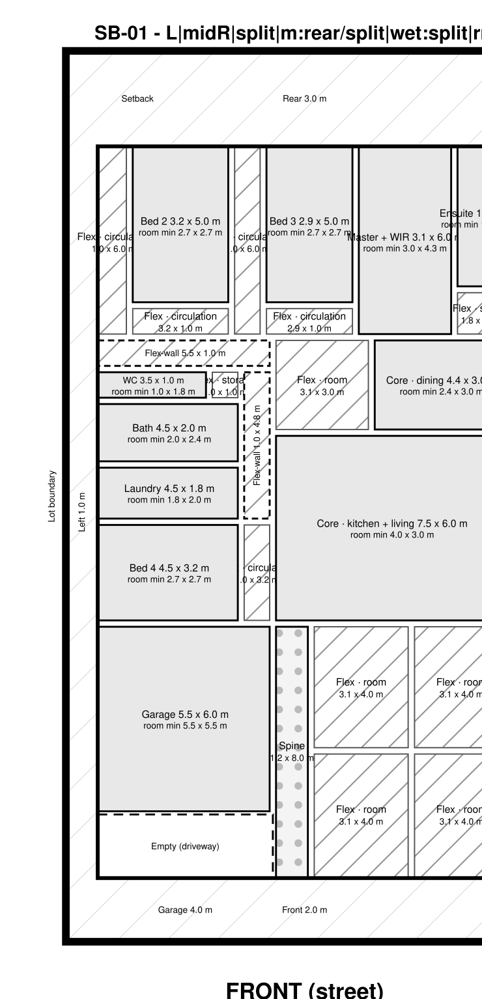
option 6 (rank 135 of 2202)score 20.75 · Flex share 21% · living 3% (8.8 m²) · circulation 11% · Core 21% · pieces 6.9/100 m² · bedroom spread 12.3 m · wet near bed yes · laundry near yes · spine 8.0 m · extensions 2.2 m² · flex m²: room 42.6 · living 8.8 · circulation 16.0 · storage 2.8 · sliver 0.0 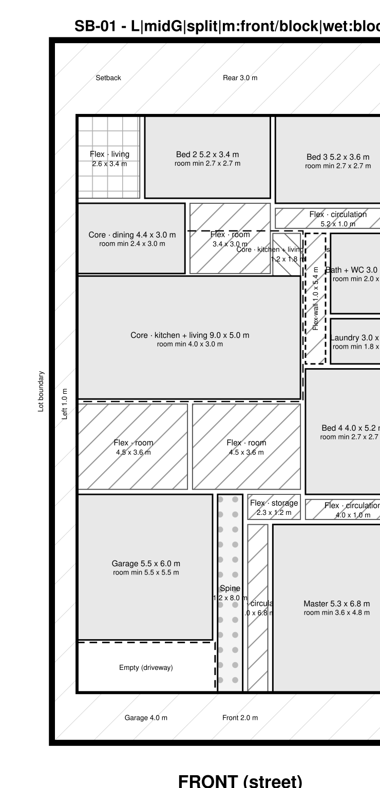
SB-02 - 14.0 x 30.0 lot, 4 bed, garage 1.0 m back 12000 x 22500 mm, 4 bed, double garage
lot 14000 x 30000 mm - setbacks (mm) front 4500 / garage 5500 / left 1000 / right 1000 / rear 3000 - garage recess 1000 mm
valid 3000/5824 generated · 2322 distinct · 1161 mirror images hidden
option 1 (rank 1 of 2322)score 8.15 · Flex share 14% · living 14% (37.2 m²) · circulation 6% · Core 20% · pieces 6.4/100 m² · bedroom spread 0.0 m · wet near bed yes · laundry near yes · spine 7.0 m · extensions 0.0 m² · flex m²: room 24.8 · living 37.2 · circulation 8.0 · storage 3.1 · sliver 0.0 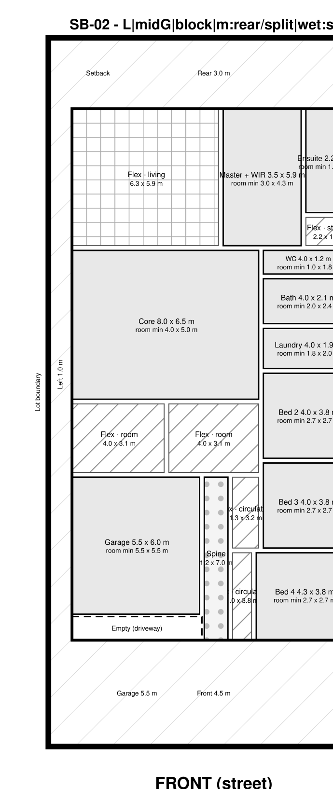
option 2 (rank 37 of 2322)score 8.75 · Flex share 16% · living 14% (36.5 m²) · circulation 10% · Core 20% · pieces 6.8/100 m² · bedroom spread 0.0 m · wet near bed yes · laundry near yes · spine 7.0 m · extensions 0.0 m² · flex m²: room 25.6 · living 36.5 · circulation 12.9 · storage 2.9 · sliver 0.0 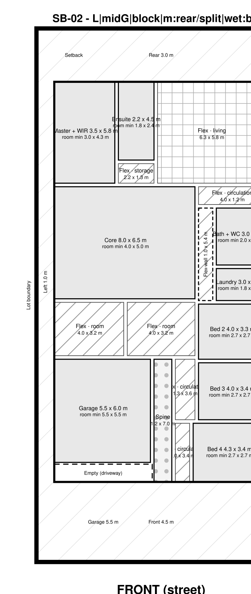
option 3 (rank 49 of 2322)score 10.59 · Flex share 24% · living 2% (4.6 m²) · circulation 8% · Core 22% · pieces 6.4/100 m² · bedroom spread 9.5 m · wet near bed yes · laundry near yes · spine 7.0 m · extensions 0.0 m² · flex m²: room 60.5 · living 4.6 · circulation 2.9 · storage 0.0 · sliver 0.0 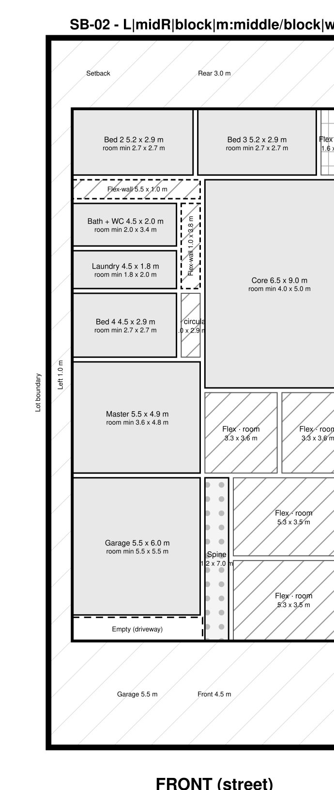
option 4 (rank 107 of 2322)score 12.28 · Flex share 26% · living 0% (0.0 m²) · circulation 6% · Core 21% · pieces 6.4/100 m² · bedroom spread 0.0 m · wet near bed yes · laundry near yes · spine 7.0 m · extensions 14.1 m² · flex m²: room 62.5 · living 0.0 · circulation 6.2 · storage 0.0 · sliver 0.0 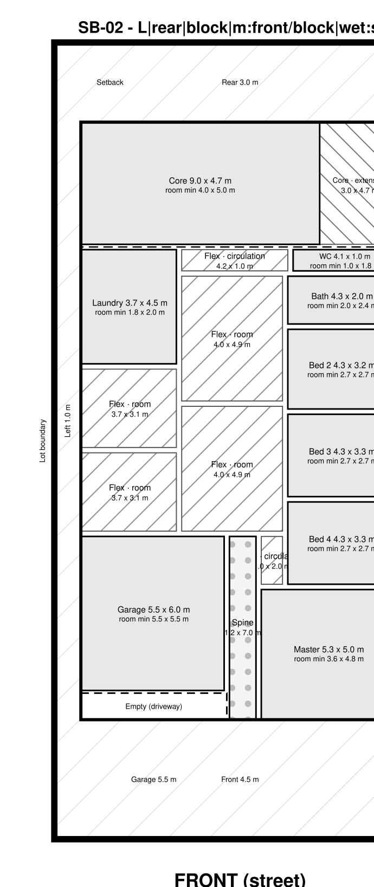
option 5 (rank 209 of 2322)score 19.04 · Flex share 20% · living 2% (5.4 m²) · circulation 8% · Core 22% · pieces 6.0/100 m² · bedroom spread 10.0 m · wet near bed yes · laundry near yes · spine 7.0 m · extensions 0.0 m² · flex m²: room 38.8 · living 5.4 · circulation 13.1 · storage 0.0 · sliver 0.0 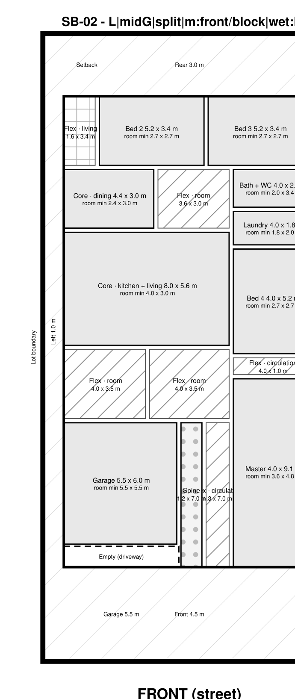
option 6 (rank 219 of 2322)score 19.73 · Flex share 22% · living 2% (5.3 m²) · circulation 8% · Core 22% · pieces 7.9/100 m² · bedroom spread 14.2 m · wet near bed yes · laundry near yes · spine 7.0 m · extensions 14.7 m² · flex m²: room 48.9 · living 5.3 · circulation 8.6 · storage 1.0 · sliver 0.0 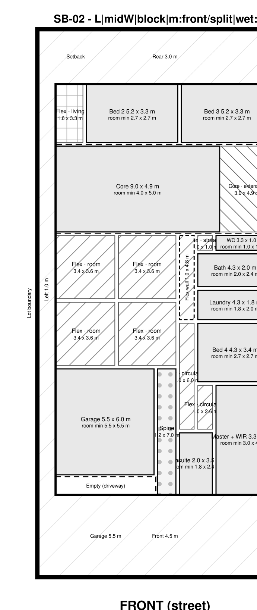
SB-03 - 12.5 x 32.0 lot, 3 bed, single garage 10100 x 26000 mm, 3 bed, single garage
lot 12500 x 32000 mm - setbacks (mm) front 4000 / garage 6000 / left 900 / right 1500 / rear 2000 - garage recess 2000 mm
valid 1752/5504 generated · 1262 distinct · 631 mirror images hidden
option 1 (rank 1 of 1262)score 12.16 · Flex share 26% · living 15% (39.3 m²) · circulation 4% · Core 22% · pieces 6.3/100 m² · bedroom spread 0.0 m · wet near bed yes · laundry near yes · spine 8.0 m · extensions 0.0 m² · flex m²: room 61.7 · living 39.3 · circulation 0.0 · storage 4.0 · sliver 0.0 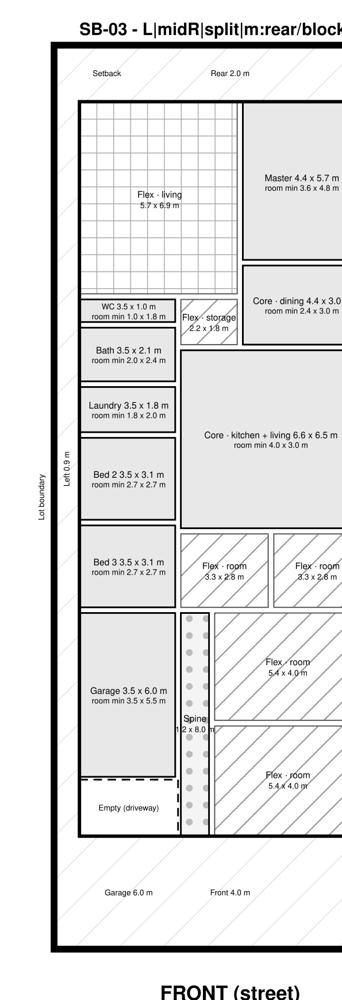
option 2 (rank 7 of 1262)score 12.85 · Flex share 26% · living 0% (0.0 m²) · circulation 9% · Core 26% · pieces 7.0/100 m² · bedroom spread 0.0 m · wet near bed yes · laundry near yes · spine 8.0 m · extensions 7.2 m² · flex m²: room 48.5 · living 0.0 · circulation 13.3 · storage 4.4 · sliver 0.0 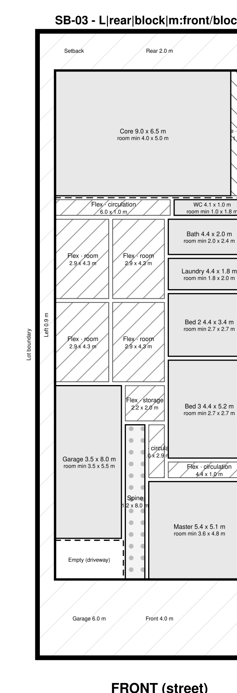
option 3 (rank 60 of 1262)score 17.8 · Flex share 31% · living 14% (35.3 m²) · circulation 4% · Core 17% · pieces 5.1/100 m² · bedroom spread 0.0 m · wet near bed yes · laundry near yes · spine 8.0 m · extensions 0.0 m² · flex m²: room 78.2 · living 35.3 · circulation 0.0 · storage 0.0 · sliver 0.0 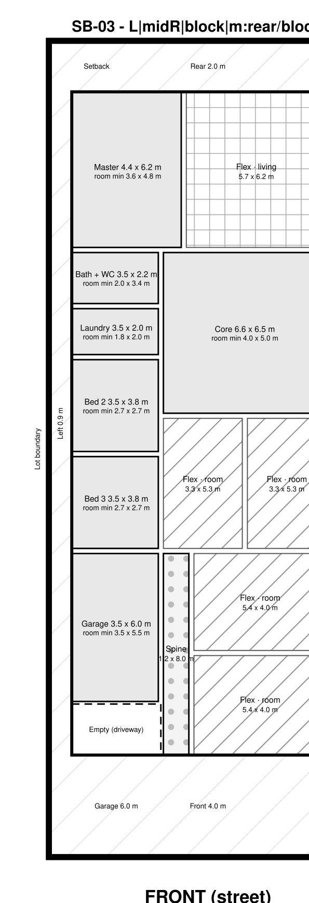
option 4 (rank 69 of 1262)score 18.33 · Flex share 15% · living 10% (26.0 m²) · circulation 10% · Core 23% · pieces 7.4/100 m² · bedroom spread 0.0 m · wet near bed yes · laundry near yes · spine 8.0 m · extensions 5.0 m² · flex m²: room 21.6 · living 26.0 · circulation 6.8 · storage 10.7 · sliver 0.0 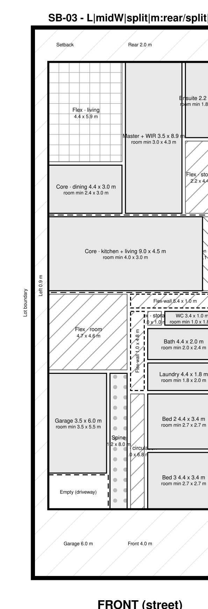
option 5 (rank 71 of 1262)score 18.36 · Flex share 21% · living 14% (35.3 m²) · circulation 8% · Core 21% · pieces 6.3/100 m² · bedroom spread 0.0 m · wet near bed no · laundry near yes · spine 8.0 m · extensions 0.0 m² · flex m²: room 42.7 · living 35.3 · circulation 9.8 · storage 0.0 · sliver 0.0 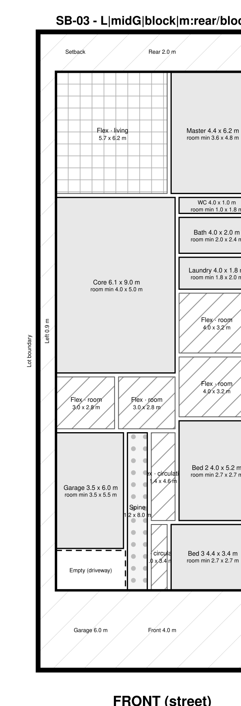
option 6 (rank 98 of 1262)score 18.55 · Flex share 13% · living 14% (35.3 m²) · circulation 11% · Core 26% · pieces 6.3/100 m² · bedroom spread 0.0 m · wet near bed yes · laundry near yes · spine 8.0 m · extensions 7.2 m² · flex m²: room 24.9 · living 35.3 · circulation 7.2 · storage 1.1 · sliver 0.0 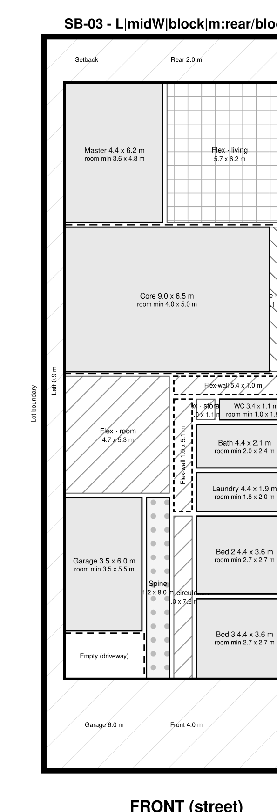
SB-04 - 15.0 x 28.0 lot, 4 bed, no recess 13000 x 22000 mm, 4 bed, double garage
lot 15000 x 28000 mm - setbacks (mm) front 3000 / garage 3000 / left 1000 / right 1000 / rear 3000 - garage recess 0 mm
valid 2896/5824 generated · 2194 distinct · 1097 mirror images hidden
option 1 (rank 1 of 2194)score 8.74 · Flex share 22% · living 3% (8.8 m²) · circulation 9% · Core 20% · pieces 5.9/100 m² · bedroom spread 10.0 m · wet near bed yes · laundry near yes · spine 6.0 m · extensions 0.0 m² · flex m²: room 39.0 · living 8.8 · circulation 17.8 · storage 6.3 · sliver 0.0 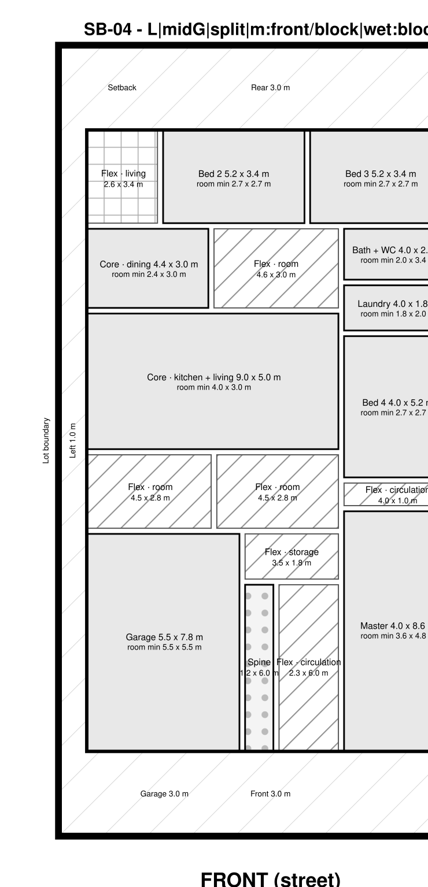
option 2 (rank 17 of 2194)score 9.65 · Flex share 16% · living 15% (43.1 m²) · circulation 4% · Core 20% · pieces 5.6/100 m² · bedroom spread 0.0 m · wet near bed yes · laundry near yes · spine 6.0 m · extensions 0.0 m² · flex m²: room 32.4 · living 43.1 · circulation 4.3 · storage 7.9 · sliver 0.0 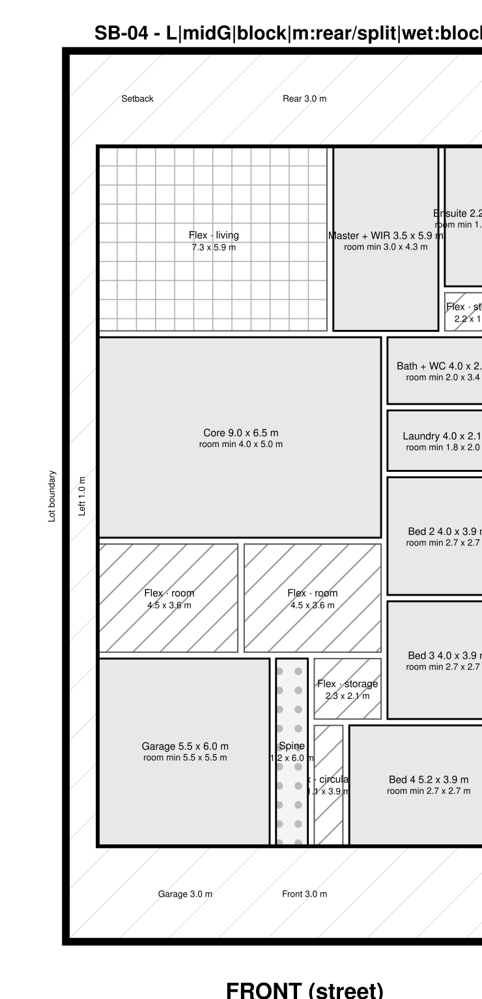
option 3 (rank 70 of 2194)score 10.34 · Flex share 18% · living 14% (40.9 m²) · circulation 8% · Core 20% · pieces 6.3/100 m² · bedroom spread 0.0 m · wet near bed yes · laundry near yes · spine 6.0 m · extensions 0.0 m² · flex m²: room 35.1 · living 40.9 · circulation 10.8 · storage 6.2 · sliver 0.0 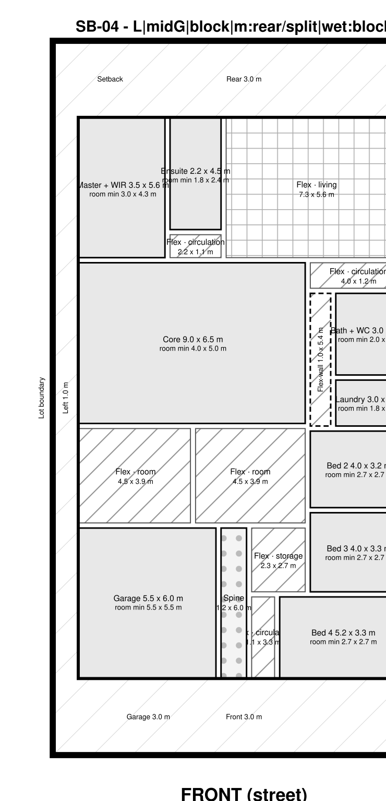
option 4 (rank 129 of 2194)score 13.86 · Flex share 28% · living 3% (8.1 m²) · circulation 7% · Core 20% · pieces 7.3/100 m² · bedroom spread 9.7 m · wet near bed yes · laundry near yes · spine 6.0 m · extensions 0.0 m² · flex m²: room 76.3 · living 8.1 · circulation 3.2 · storage 0.0 · sliver 0.0 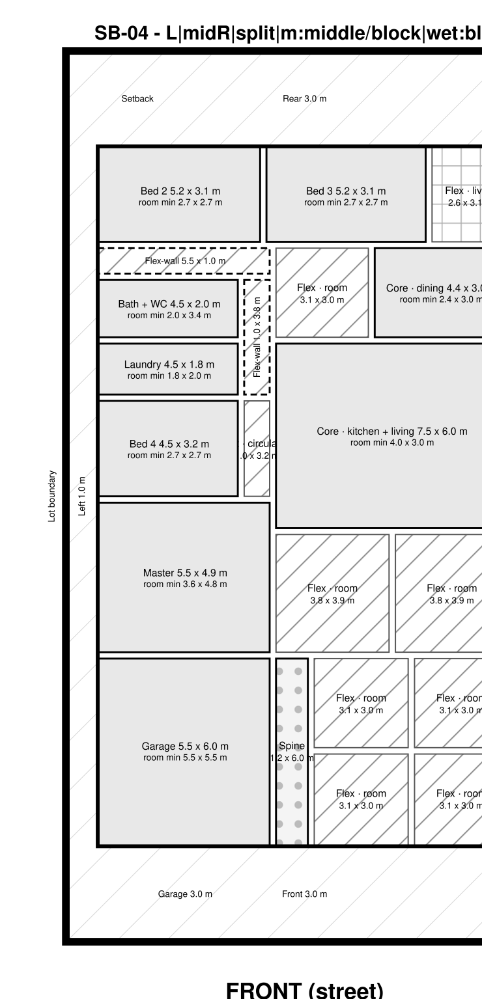
option 5 (rank 155 of 2194)score 15.8 · Flex share 30% · living 0% (0.0 m²) · circulation 4% · Core 22% · pieces 5.9/100 m² · bedroom spread 0.0 m · wet near bed yes · laundry near yes · spine 6.0 m · extensions 19.2 m² · flex m²: room 75.8 · living 0.0 · circulation 5.2 · storage 3.4 · sliver 0.0 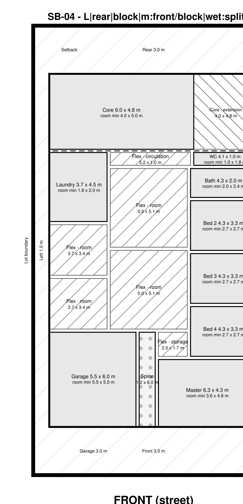
option 6 (rank 267 of 2194)score 18.7 · Flex share 18% · living 17% (48.6 m²) · circulation 7% · Core 20% · pieces 4.5/100 m² · bedroom spread 0.0 m · wet near bed yes · laundry near yes · spine 6.0 m · extensions 0.0 m² · flex m²: room 36.9 · living 48.6 · circulation 13.8 · storage 0.0 · sliver 0.0 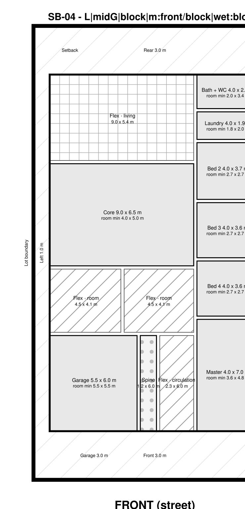
SB-05 - 15.0 x 28.0 lot, 4 bed, garage number smaller 13000 x 20000 mm, 4 bed, double garage
lot 15000 x 28000 mm - setbacks (mm) front 5000 / garage 4000 / left 1000 / right 1000 / rear 3000 - garage recess 0 mm
valid 2220/5824 generated · 1604 distinct · 802 mirror images hidden
option 1 (rank 1 of 1604)score 7.22 · Flex share 15% · living 0% (0.0 m²) · circulation 4% · Core 22% · pieces 5.8/100 m² · bedroom spread 0.0 m · wet near bed yes · laundry near yes · spine 6.0 m · extensions 0.0 m² · flex m²: room 13.8 · living 0.0 · circulation 3.7 · storage 20.6 · sliver 0.0 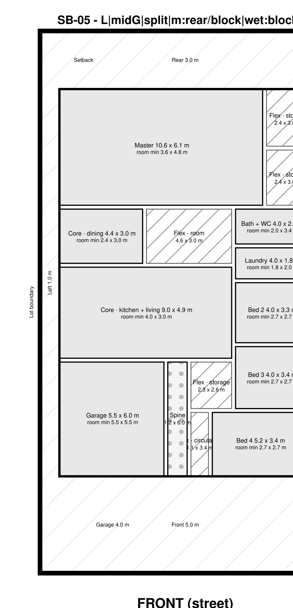
option 2 (rank 3 of 1604)score 9.31 · Flex share 21% · living 1% (3.5 m²) · circulation 7% · Core 19% · pieces 6.5/100 m² · bedroom spread 10.4 m · wet near bed yes · laundry near yes · spine 6.0 m · extensions 0.0 m² · flex m²: room 23.4 · living 3.5 · circulation 6.2 · storage 25.9 · sliver 0.0 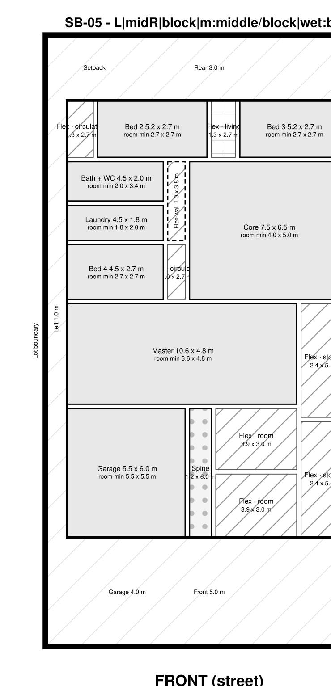
option 3 (rank 7 of 1604)score 9.32 · Flex share 21% · living 3% (8.8 m²) · circulation 10% · Core 23% · pieces 5.4/100 m² · bedroom spread 9.9 m · wet near bed yes · laundry near yes · spine 6.0 m · extensions 0.0 m² · flex m²: room 36.9 · living 8.8 · circulation 17.8 · storage 0.0 · sliver 0.0 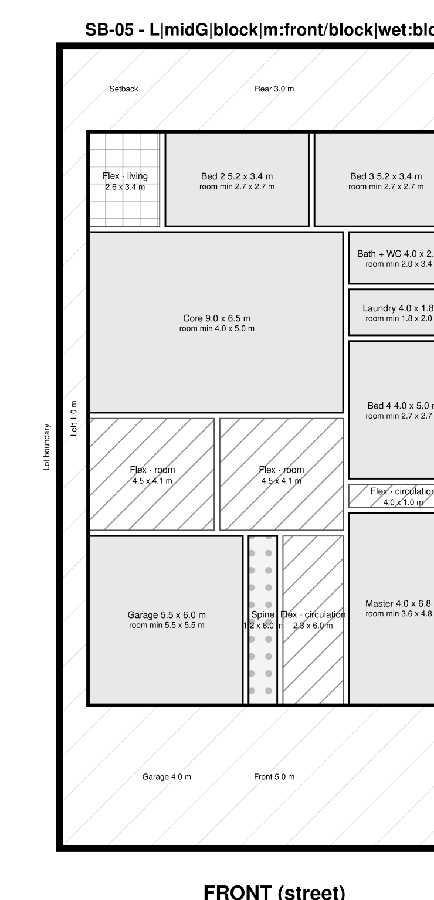
option 4 (rank 53 of 1604)score 11.27 · Flex share 24% · living 0% (0.0 m²) · circulation 11% · Core 22% · pieces 9.2/100 m² · bedroom spread 10.7 m · wet near bed yes · laundry near yes · spine 6.0 m · extensions 0.0 m² · flex m²: room 47.1 · living 0.0 · circulation 11.8 · storage 2.9 · sliver 0.0 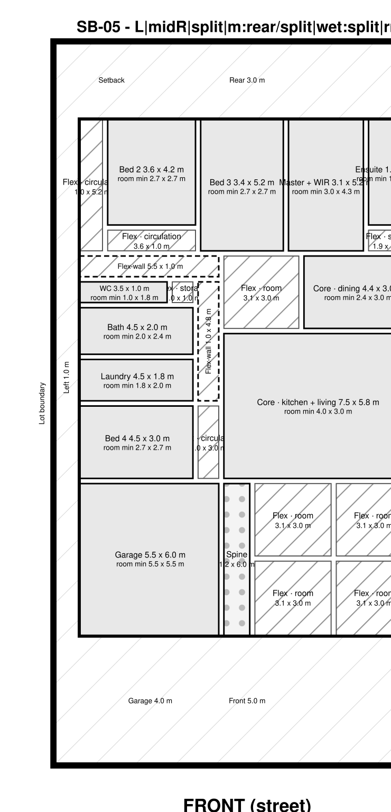
option 5 (rank 77 of 1604)score 13.56 · Flex share 15% · living 14% (36.5 m²) · circulation 6% · Core 23% · pieces 6.9/100 m² · bedroom spread 0.0 m · wet near bed yes · laundry near yes · spine 6.0 m · extensions 0.0 m² · flex m²: room 0.0 · living 36.5 · circulation 9.6 · storage 28.4 · sliver 0.0 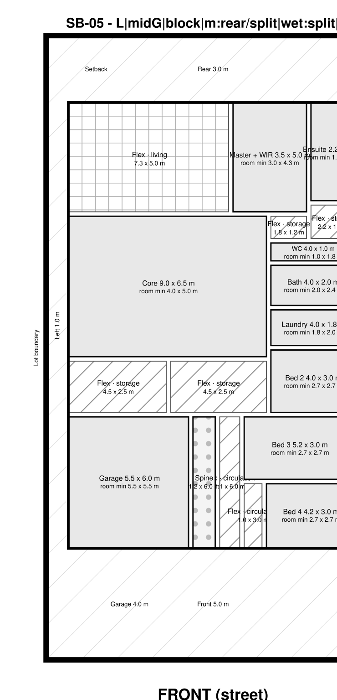
option 6 (rank 101 of 1604)score 14.36 · Flex share 28% · living 0% (0.0 m²) · circulation 5% · Core 22% · pieces 6.2/100 m² · bedroom spread 0.0 m · wet near bed yes · laundry near yes · spine 6.0 m · extensions 17.2 m² · flex m²: room 62.7 · living 0.0 · circulation 5.2 · storage 4.0 · sliver 0.0 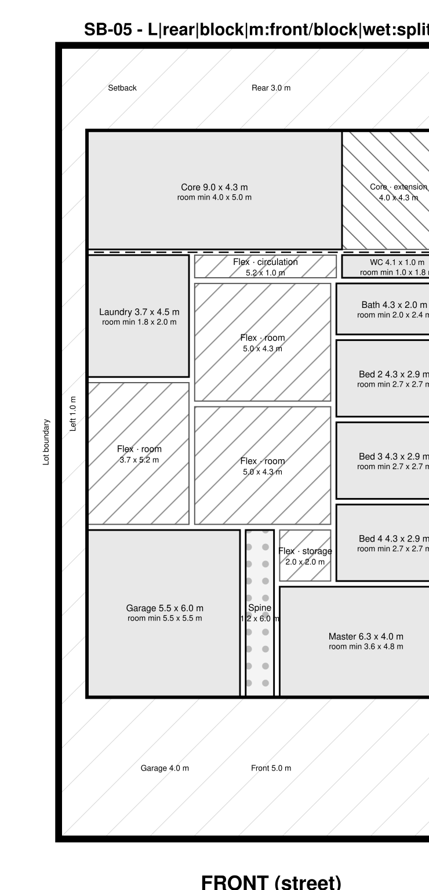